용접기사 (2006-03-05 기출문제)
1과목: 기계제작법
1. 냉간 단조와 비교한 열간 단조의 특성이 아닌 것은?
- 재결정온도 이상에서의 단조작업이다.
- 단조에 소요되는 동력소모가 적다.
- 제품의 표면이 산화 되지 않는다.
- 1회 단조에 의한 단조효과가 크다.
(정답률: 알수없음)

2. 둥근 날 바이스로 선삭 할 때 가공 면의 이론적 표면 거칠기는 다음 어느 것으로 나타낼 수 있는가? (단, f는 이송, R은 공구의 날 끝 반지름이다.)
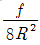
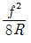
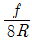
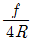
(정답률: 알수없음)
3. 플래시 버트 용접(flash butt welding)에서 산화물이나 불순물은 어떻게 처리되는가?
- 용제의 사용으로 제거된다.
- 접합부에 생기는 용융금속에 묻어 흘러나간다.
- 압접할 때 밀려 나간다.
- 접합부에 그대로 잔류한다.
(정답률: 알수없음)
4. 규사와 열경화성 석탄산 수지의 혼합물이 주형의 재료이며 내연 기관의 실린더 블록을, 다량(多量)으로 주조하는 데 가장 적당한 주조법은?
- 셀 주형법 (shell molding process)
- 인베스트먼트 주조법 (investment casting)
- 쇼 주조법 (shaw process)
- 저압 주조법 (low pressure casting)
(정답률: 알수없음)
5. 측정자의 미세한 움직임을 광학적으로 확대하여 측정하는 측정기는?
- 미니 미터 (minimeter)
- 공기 마이크로미터
- 옵티 미터 (optimeter)
- 전기 마이크로미터
(정답률: 알수없음)
6. 금속산화물이 알루미늄에 의하여 산소를 빼앗기는 화학반응을 이용한 용접 방법은?
- 원자수소 용접법
- 프로젝션 용접법
- 테르밋 용접법
- 플래시 용접법
(정답률: 알수없음)
7. 초음파 가공장치에 관한 설명으로 맞지 않는 것은?
- 구멍을 가공하기 쉽다.
- 복잡한 형상도 쉽게 가공할 수 있다.
- 부도체의 가공을 할 수 없다.
- 가공재료의 제한이 매우 적다.
(정답률: 알수없음)
8. 주물사의 강도 시험 중 틀린 것은?
- 굽힘 강도 시험
- 인장 강도 시험
- 전단 강도 시험
- 충격 강도 시험
(정답률: 알수없음)
9. 판금가공에서 스프링백(spring back)을 가장 옳게 설명한 것은?
- 스프링의 피치를 나타낸다.
- 판재를 굽혔을 때 굽힌 부분이 활 모양으로 되는 현상이다.
- 스프링에서 장력의 세기를 나타내는 척도이다.
- 판재를 굽힐 때, 하중을 제거하면 탄성에 의해 처음 상태로 약간 복귀되는 현상이다.
(정답률: 알수없음)
10. 구멍의 내면을 가장 정밀하게 다듬는 가공법은 다음 중 어느 것이 가장 좋은가?
- 드릴링(Drilling)
- 보링(Boring)
- 리밍(Reaming)
- 호닝(Honing)
(정답률: 59%)
11. 금속재료에 처음 한 방향으로 하중을 가하고, 다음에 반대 방향으로 하중을 가하였을 때, 전자보다는 후자의 경우가 탄성한도가 저하한다. 이 현상은?
- 크리프 현상
- 바우싱거 효과
- 피로 현상
- 탄성파손 효과
(정답률: 알수없음)
12. 특수 성향가공법으로 다이(die)를 금속 재료 대신에 경목재(硬木材) 등을 사용하는 방법이며, 선반의 주 축에 다이를 고정하고 심압대로 눌러서, 스틱(stick)으로 원형에 밀어 붙여 가공하는 것은?
- 스피닝(spinning)
- 스탬핑(stamping)
- 코이닝(coining)
- 액압성형법(hydroforming)
(정답률: 알수없음)
13. 연삭력 P=20Kgf, 연삭 속도 1500m/min일 때 연삭 동력은 약 얼마인가? (단, 연삭 효율은 무시한다.)
- 4.5 PS
- 6.7 PS
- 10.1 PS
- 15.3 PS
(정답률: 50%)
14. 금속재료의 표면에 강철이나 주철의 강구를 고속으로 분사시켜 표면층의 경도를 높이는 방법은?
- 금속침투법
- 칠드경화법
- 숏피닝(shot peening)
- 하드페이싱(hard facing)
(정답률: 알수없음)
15. 선반가공에서 바이트의 옆면 및 앞면과 공작물과의 마찰을 줄이기 위한 공구각은?
- 여유각
- 경사각
- 앞날각
- 옆날각
(정답률: 알수없음)
16. 길이 300mm의 사인바로 29°를 측정하려면 블록 게이지는 몇 mm를 사용하면 되는가? (단, 사인 바와 측정 면이 일치함)
- 138.79mm
- 127.36mm
- 186.25mm
- 145.44mm
(정답률: 알수없음)
17. 직립식 밀링머신(vertical milling machine)에는 어떤 공구가 사용되는가?
- 플레인 커터(plain cutter)
- 메탈 소(metal saw)
- 총형 커터(formed cutter)
- 엔드 밀(end mill)
(정답률: 알수없음)
18. 다음 탭에 관한 설명 중에서 옳은 것은?
- 1/16 테이퍼의 파이프 탭은 기밀을 필요로 하는 부분에 태핑을 하는데 쓰인다.
- 핸드탭 등경 1번 탭으로 나사를 깎을 때에는 탭구멍 입고에 모떼기 할 필요가 없다.
- 핸드탭 등경 1번 탭은 약간에 테이퍼를 주어 탭구멍에 잘 들어가게 하며 이 테이퍼부는 절삭을 하지 않고 나사부의 안내가 된다.
- 탭의 드릴 사이즈 d는 나사의 호칭 지름을 D, 피치를 p라고 하면 d는 D-3p로 계산된다.
(정답률: 알수없음)
19. 압출기의 주요 부분이 아닌 것은?
- 컨테이너(container)
- 램(ram)
- 다이(die)
- 하우징(housing)
(정답률: 알수없음)
20. 담금질한 강철을 적당한 온도로 A1 변태점 이하에서 인성을 증가 시키는 조작은?
- 뜨임
- 풀림
- 불림
- 항온열처리
(정답률: 알수없음)
2과목: 재료역학
21. 그림과 같이 지름이 다른 2단봉재에 저장되는 탄성 에너지는? (단, E : 탄성계수)
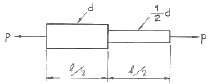
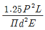
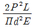
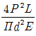
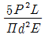
(정답률: 알수없음)
22. 코일스프링의 평균지름 D를 2배로 하면 같은 조건에서 처짐은 몇 재가 되는가?
- 2
- 4
- 6
- 8
(정답률: 알수없음)
23. 고정단의 지름을 d, 비중량 г, 길이 l, 탄성계수 E 인 원추형의 봉이 그림과 같이 연직으로 매달려있을 때 자중에 의한 신장량은 얼마인가?
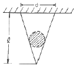
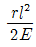
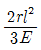
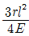
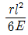
(정답률: 알수없음)
24. 길이 2m의 외팔보의 자유단에 5KN의 집중하중이 작용하고 있다. 허용응력이 100Mpa이라면 높이 10cm의 사각형 단면에서 폭은?
- 6cm
- 7cm
- 8cm
- 9cm
(정답률: 알수없음)
25. 변형율 성분이 εx=900×10-6, εy=-100×10-6, γxy=600×10-6 일 때 면내 최대 전단변형률의 값은?
- 400×10-6
- 583×10-6
- 983×10-6
- 1166×10-6
(정답률: 50%)
26. 도면과 같이 무게 W=6000 N이 걸려 있을 때, 봉 AB에 걸리는 힘은 몇 N인가? (단, 마찰 및 자중은 무시한다.)
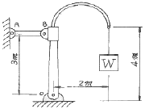
- 6000
- 4000
- 3000
- 8000
(정답률: 알수없음)
27. 탄성계수 E= 210 GPa, 선팽창계수 α=11.5×10-6/℃ 인 철도 레일을 15℃에서 양단을 고정하였다. 발생응력을 85 MPa로 제한하려 할 때 열응력에 의한 온도변화의 허용범위는?
- -10.2° ~ 50.2°
- 20.2° ~ 30.5°
- -20.2° ~ 50.2°
- -20.2° ~ 30.5°
(정답률: 알수없음)
28. 다음 그림과 같은 삼각형 분포하중이 작용하고 있을 때, 이 단순보의 반력 RA는 몇 N인가?
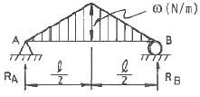
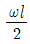
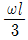
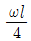
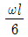
(정답률: 알수없음)
29. 수직응력에 의한 탄성에너지에 대한 설명 중 맞는 것은?
- 응력의 자승에 비례하고, 탄성계수에 반비례한다.
- 응력의 3승에 비례하고, 탄성계수에 비례한다.
- 응력에 비례하고, 탄성계수에도 비례한다.
- 응력에 반비례하고, 탄성계수에 비례한다.
(정답률: 알수없음)
30. 그림과 같은 등분포 하중을 받고 있는 외팔보의 최대 처짐은? (단, EI는 보의 굽힘 강성이다.)
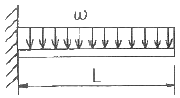
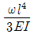
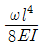
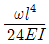
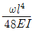
(정답률: 알수없음)
31. 길이 15mm, 지름 10mm의 강봉에 8 KN의 인장하중을 걸었더니 탄성변형이 생겼다. 이 때의 늘어난 길이는? (단, 이 강재의 탄성계수 E = 210 GPa이다.)
- 7.3mm
- 2.28mm
- 0.73mm
- 0.28mm
(정답률: 알수없음)
32. 다음 중 Hooke의 법칙과 관계 없는 것은?(단, σ : 수직응력, E : 탄성계수, ε : 수직변형률, L : 원래길이, δ : 변형량, τ : 전단응력, G : 전단탄성계수, г : 전단변형률, K : 체적탄성계수, εv : 체적변형률)
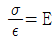
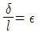
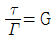
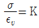
(정답률: 알수없음)
33. 길이가 30cm이고, 1mm × 20mm인 직사각형 단면의 얇은 강철자의 양단에 우력을 작용시켜 중심각이 60°인 원호의 모양으로 굽혔다. 강철자가 받는 굽힘 모멘트는? (단, 탄성계수 E = 210 GPa)
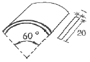
- 0.97 Nㆍm
- 1.22 Nㆍm
- 1.37 Nㆍm
- 1.52 Nㆍm
(정답률: 알수없음)
34. 외팔보의 자유단에 하중 P가 작용할 때, 이 보의 굽힘에 의한 탄성 변형에너지를 구하면? (단, EI는 일정하다.)
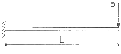
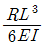
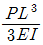
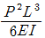
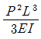
(정답률: 알수없음)
35. 직경 5cm의 차축이 7°만큼 비틀렸다. 이때 최대 전단응력이 100MPa이고, 지료의 전단 탄성계수가 80 GPa이라고 하면 이 차축의 길이에 가장 가까운 것은?
- 2 m
- 2.5 m
- 1.5 m
- 1 m
(정답률: 알수없음)
36. 그림과 같이 10cm × 10cm의 단면적을 갖고 양단이 회전단으로된 부재가 중심축 방향에 압축력 P가 작용하고 있을 때 장주의 길이가 2m이라면 셋방비의 값은 얼마인가?
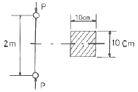
- 890
- 69
- 49
- 29
(정답률: 알수없음)
37. 그림과 같은 균일분포하중을 받는 외팔보에서 자유단의 처짐이 δ = 3cm 이고 경사각이 θ = 0.02 rad일때 이 보의 길이는 얼마인가? (단, 탄성계수 E = 210 GPa 이다.)
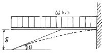
- 1 m
- 2 m
- 4 m
- 7 m
(정답률: 알수없음)
38. 같은 재료로 되어있는 지름 d의 원형 단면과 1변의 길이가 a인 정사각형 단면의 보가 있다. 이들 보가 굽힘에 대하여 같은 강도를 갖기 위한 d : a의 비는?
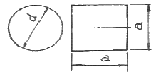
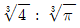
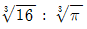
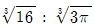
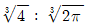
(정답률: 알수없음)
39. 다음 그림과 같이 연속보가 균일 분포하중(q)을 받고 있을 때 A점의 반력은?
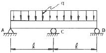
- 1/8 ql
- 1/4 ql
- 3/8 ql
- 1/2 ql
(정답률: 알수없음)
40. 7.5 KW의 모터가 3600 rpm으로 운전될 때 전단응력이 60 MPa를 초과하지 못한다면 사용할 수 있는 최소 축 지름은?
- 6 mm
- 8 mm
- 10 mm
- 12 mm
(정답률: 알수없음)
3과목: 용접야금
41. 용접과정의 화학 반응의 특성은?
- 온도가 높고 시간이 길다.
- 온도가 낮고 시간이 길다.
- 온도가 낮고 시간이 짧다.
- 온도가 높고 시간이 짧다.
(정답률: 82%)
42. 저항용접에서 용접입열 (weld heat input)을 표시하는 식 중 옳은 것은? (단, H:용접입열, R:용접재료간의 접촉저항 및 그 재료의 고유저항의 총합, I:용접전류, K:손실계수 이다.)
- H = IRtK
- H = I2RtK
- H = I2R2tK
- H = I3R2tK
(정답률: 70%)
43. 상온에서 순철(Fe)의 결정 격자는?
- 면심입방격자이다.
- 체심입방격자이다.
- 조밀육방격자이다.
- 체심정방격자이다.
(정답률: 알수없음)
44. 금속의 강도를 지배하는 기구 중 금속경화 기구가 아닌 것은?
- 가공경화
- 고용체경화
- 석출경화
- 풀림경화
(정답률: 알수없음)
45. 항온 변태 곡선과 관계 없는 것은?
- S 곡선
- CCT
- nose
- bainite
(정답률: 알수없음)
46. Cu합금의 용접시 열영향부의 넓이는 연강에 비해 어떠한가?
- 같다.
- 용접방법에 따라 다르다.
- 매우 좁다.
- 매우 넓다.
(정답률: 80%)
47. 강의 상태도에서 γ역을 넓히는 역할을 하는 원소는?
- Cr
- Mo
- Si
- Mn
(정답률: 알수없음)
48. 냉간 가공시 가공도가 증가하면 강도, 항복점 및 경도가 증가하며, 연신율은 감소하는데 이런 현상을 무엇이라 하는가?
- 슬립 변형
- 가성 취성
- 잔류 응력
- 가공 경화
(정답률: 60%)
49. Al, Ti 등에 의하여 강괴의 결정을 미세하게 하는 외에 용접성도 가장 좋은 강괴(ingot)는?
- 킬드 강 (killed steel)
- 림드 강 (rimmed steel)
- 세미 킬드 강 (semi-killed steel)
- 고 탄소강 (high-carbon steel)
(정답률: 알수없음)
50. 다음 중 중(重)금속이 아닌 것은?
- Fe
- Ni
- Be
- Cr
(정답률: 알수없음)
51. 일반 탄소강의 조직 중 오스테나이트 (Autenite)상태에서 서냉 (Slow cooling)하였을 때 나타나는 조직은?
- 마르텐사이트 (Martensite)
- 트루스타이트 (Troostite)
- 펄라이트 (Pearlite)
- 소르바이트 (Sorbite)
(정답률: 알수없음)
52. 18Cr-8Ni의 스테인리스강의 우수한 점이 아닌 것은?
- 가공성
- 내식성
- δ상 석출
- 고온성능
(정답률: 알수없음)
53. 알루미늄 용접시 용입을 조절하기 위한 방법 중 옳지 않은 방법은?
- 용접전류의 세기를 조절함
- 전극봉의 극성을 변화시킴
- 보호가스에 O2를 혼합하여 용접함
- 보호가스에 He가스량을 조절함
(정답률: 알수없음)
54. 경도(hardness)시험에 있어서 선단이 다이아몬드로 된 작은 추를 일정의 높이에서 시험편 표면에 낙하시켜 반발의 높이로서 측정하는 시험법은?
- 쇼어경도 (Shore Hardness)
- 로크웰경도 (Rockwell Hardness)
- 브리넬경도 (Brinell Hardness)
- 비커스경도 (Vickers Hardness)
(정답률: 알수없음)
55. 용접금속이 응고할 때 용융금속 중의 산소와 결함 하여 산소 제거 작용을 하는 탈산제는?
- 금속망간-형석분말
- 티탄철-이산화망간분말
- 규소철-규산칼리분말
- 망간철-알루미늄분말
(정답률: 알수없음)
56. 금속의 격자 결함 중 면결함(plane defect)에 해당하는 것은?
- 원자공공 (vacancy)
- 전위 (dislocation)
- 주조결함 (수축공 및 기공)
- 적층결함 (stacking fault)
(정답률: 알수없음)
57. 주철제품을 용접한 후 일반적인 열처리 방법은?
- normalizing
- annealing
- quenching
- tempering
(정답률: 알수없음)
58. 저온 취성을 개선하는데 가장 크게 기여하는 원소는?
- 탄소
- 망간
- 니켈
- 유황
(정답률: 알수없음)
59. 저탄소강을 인장시험 하면 200~300℃의 온도범위에서 인장강도는 매우 증가하고, 또한 연성의 저하를 나타내는 경우가 있다. 이 현상을 무엇이라 하는가?
- 청열취성 (blue shortness)
- 변형시효 (strain aging)
- 적열취성 (hot shortness)
- 저온취성 (low temperature brittleness)
(정답률: 알수없음)
60. 강의 표면에 알루미늄을 침투시키는 처리로서 내(耐) 고온성의 확산층을 생성하여 고온에서 사용되는 기계부품이 많이 이용되는 방식법은?
- 브로나이징 (Boronizing)
- 크로마이징 (Chromizing)
- 칼로라이징 (Calorizing)
- 실리콘나이징 (Silconizing)
(정답률: 알수없음)
4과목: 용접구조설계
61. 용접에서 공작물을 조립하는데, 사용하는 도구(tool)를 무엇이라고 하는가?
- 지그(jig)
- 용구(用具)
- 레그(leg)
- 보호구(保護區)
(정답률: 알수없음)
62. 용접 금속의 열처리에서 어닐링(annealing)의 목적 중 옳지 않은 것은?
- 내부응력제거
- 금속입자의 규격조절
- 유연성 회복
- 강도 및 강인성 증가
(정답률: 알수없음)
63. 다음과 같은 윤상 필릿 용접의 중립축에 대한 단면 2차 모멘트 I'의 값으로 옳은 것은?
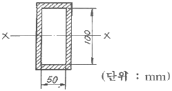
- 66.7 cm3
- 666.7 cm3
- 41.67 cm3
- 416.7 cm3
(정답률: 알수없음)
64. 용접부의 형틀 굽힘 시험에서 판 두께가 가장 두꺼운 시험편을 시험하는 것은?
- 0호
- 1호
- 2호
- 3호
(정답률: 알수없음)
65. 용접시공시 라멜라 테어의 방생과 가장 관계가 깊은 것은?
- 모재 판두께 방향의 인장강도
- 모재 판두께 방향의 단면 수축률
- 모재의 충격치
- 용접금속의 인장강도
(정답률: 알수없음)
66. 50 kgf/mm2급 고장력 강재를 사용한 저장탱크, 압력용기 등의 용접에 사용되는 용접봉은 어느 것인가?
- KSD5016
- KSD308
- KSD4316
- KSD316
(정답률: 알수없음)
67. 맞대기 용접에서 용접금속 및 모재의 수축에 대하여 용접 전(前)dp 반대방향으로 굽혀 놓고 작업하는 용접 교정 방법은?
- 억제법
- 도열법
- 피닝법
- 역 변형법
(정답률: 알수없음)
68. 다음 용접장비 및 용어에 관한 각각의 설명 중 옳지 않은 것은?
- 용접 지그는 용접제품을 조립할 때 사용하는 도구이다.
- 고정구는 용접부품을 잡고 있는 역할을 한다.
- 포지셔너는 피용접물을 용접하기 쉬운 상태로 놓는다.
- 스트롱 백은 용착 금속이 흘러내리는 것을 방지한다.
(정답률: 55%)
69. 다음 그림은 어떤 형식의 용접 이음인가?(문제 복원 오류로 그림이 없습니다. 정확한 그램 내용을 아시는분 께서는 자유게시판에 그림 등록 부탁 드립니다. 정답은 2번 입니다.)
- 맞대기 용접이음
- 겹치기 용접이음
- T형 용접이음
- 십자형 용접이음
(정답률: 알수없음)
70. 그림과 같은 굽힘을 받는 용접부 선형의 중립 축 X-X'에 대한 단면 2차 모멘트로 가장 적합한 것은? (단, 용접두께를 t = 1로 보고 계산한 식이다.)
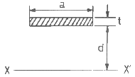
- ad2
- 2d2
- 2ad2
- d2
(정답률: 70%)
71. 용접부의 기공(Blow hole) 방지에 가장 적합한 부속품은?
- 포지셔너(Positioner)
- 런 오프 탭(Run-off-tab)
- 스트롱 백(Strong back)
- 도그 피스(dog piece)
(정답률: 알수없음)
72. 응력집중에 관한 내용이 아닌 것은?
- 용접이음에 소성변형이 생기면 응력집중이 작아진다.
- 이음의 정적 강도에 영향을 받는다.
- 용접 끝 (TOE OF WELD) 부분에 국부적으로 일어난다.
- 피로강도에 크게 영향을 미친다.
(정답률: 알수없음)
73. 재료의 열전도율이 가장 큰 것에서 작은 것의 순서로 된 것은?
- 구리 - 알루미늄 - 연강
- 스텐레스 - 알루미늄 - 연강
- 구리 - 스텐레스 - 알루미늄
- 연강 - 구리 - 알루미늄
(정답률: 알수없음)
74. 필릿(Fillet) 용접부의 다리길이는 판 두께의 몇 % 정도가 가장 적당한가?
- 50%
- 60%
- 70%
- 80%
(정답률: 82%)
75. 그림과 같은 완전 용입된 평판 V형 맞대기 용접 이음의 굽힘 모멘트 Mb=9500kgfㆍcm가 작용하고 있을 때 최대 굽힘 응력은 몇 kgf/cm2 인가? (단, L = 200mm, t = 20mm으로 한다.)
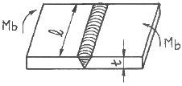
- 600.3
- 712.5
- 850.4
- 922.1
(정답률: 37%)
76. 필릿 용접치수를 결정하는데 사용하는 다음과 같은 선형의 단면 2차 극 모멘트 Ip' 는?
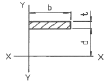
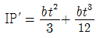
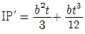
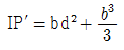
(정답률: 25%)
77. 용접에서 홈 형태 중 가장 두꺼운 판에 적합한 것은?
- I형홈
- V형홈
- J형홈
- X형홈
(정답률: 알수없음)
78. 고장력강의 용접결함 중 저온균열이 생기는 직접적인 원인이 아닌 것은?
- 용접부의 경화
- 용접 중 발생하는 수소
- 내열 피로특성
- 구조물에 있어서의 구속도
(정답률: 알수없음)
79. 용접부의 열 유동에 대한 설명 중 옳지 않은 것은?
- 용접부의 재질 변화를 알기 위하여 최고 도달 온도를 알아야 한다.
- 재질변화를 알기 위하여 냉각 속도도 알 필요가 있다.
- 용접부의 재질변화에 예열 온도가 영향을 미친다.
- 용접 입열의 크기는 재질변화에 영향이 없다.
(정답률: 60%)
80. 저수소계 용접봉(E4316)의 특징이 아닌 것은?
- 인성, 내균열성이 우수하다.
- 아크를 길게 유지하면 전자세 용접이 되며 용접봉은 건조하지 않아도 된다.
- 석회석이나 형석을 주성분으로 하는 용접봉이다.
- 아크는 약간 불안정하고, 비드가 볼록형이 되는 경우가 있다.
(정답률: 알수없음)
5과목: 용접일반 및 안전관리
81. 용적이 33리터인 산소용기의 고압력계에 100kgf/cm2으로 나타났다면 프랑스식 300번의 팁으로는 몇시간 용접할 수 있는가? (단, 산소와 아세틸렌의 혼합비는 1 : 1이다.)
- 11시간
- 15시간
- 20시간
- 7.5시간
(정답률: 70%)
82. 서브머지드 아크 용접의 단점에 해당되는 설명은?
- 용융속도 및 용착속도가 느리다.
- 루트 간격이 0.8mm 이상이면 용락이 되어 용접 할 수 없다.
- 용입이 얕다.
- 곧은 용접선의 용접은 기계의 설치조작이 어려우므로 주로 곡선용에 사용된다.
(정답률: 알수없음)
83. 직류용접기에서 정전압특성을 갖는 용접은?
- 실드메탈 아크 용접 (SMAW)
- 텅스텐 아크 용접 (GTAW)
- 플라즈마 아크 용접 (PAW)
- 가스메탈 아크 용접 (GMAW)
(정답률: 알수없음)
84. 아크 용접시 전격을 가장 받기 쉬운 경우는?
- 용접전류가 많을 때
- 용접봉이 굵고 취약할 때
- 아크가 불안정할 때
- 어스 접촉이 양호할 때
(정답률: 알수없음)
85. 방사선 사진의 상에서 결함의 크기를 표시하여 비교하기 위한 것은?
- 투과도계
- 계조계
- 탐촉자
- 흡수계
(정답률: 알수없음)
86. 용접전류를 200A, 아크 전압을 25V로 아크 용접하였을 때 용접입열이 2000 [Joule/cm]였다. 이 때 용접속도는 얼마인가?
- 2.5 cm/min
- 5 cm/min
- 150 cm/min
- 15 cm/min
(정답률: 알수없음)
87. 원자수소 용접에서 일어나는 상태변화이다. 옳은 것은?
- H2→2H→H
- H→2H→2H2
- H2→2H→H2
- 2H→H2→2H
(정답률: 알수없음)
88. 조선소 등에서 두껍고 큰 강판을 평행 절단하는데 적합한 가스 절단장치는?
- 자동 가스 절단기
- 플레임 플레이너
- 광전관식 절단기
- 수동 가스 절단기
(정답률: 알수없음)
89. 용접기에서 멀리 떨어져서 작업을 수행할 때 전류의 원격조정(Remote Control)이 가능한 용접기는?
- 가동철심형
- 탭전환형
- 가동코일형
- 가포화리액터형
(정답률: 알수없음)
90. 피복아크 용접봉 E4316-AC-5.0-400에서 400이 의미하는 것은?
- 용접봉의 종류
- 용접봉의 개수
- 용접봉의 길이
- 용접봉의 전류
(정답률: 알수없음)
91. 용접의 종류 중 압접에 속하는 것은?
- 초음파 용접
- 전자빔 용접
- 레이저 용접
- 원자수소 용접
(정답률: 알수없음)
92. 용접결함 중 성질상 결함에 해당되는 것은?
- 용접균열
- 언더컷
- 용입불량
- 인장강도 부족
(정답률: 알수없음)
93. 불활성가스 금속아크 용접법의 특성으로 옳은 것은?
- 용제를 사용하므로 용접 후 청소가 필요하다.
- 전류밀도가 매우 낮고 저능률적이다.
- 스패터 및 합금 성분의 손실이 적다.
- 용접 가능한 판두께의 범위가 좁다.
(정답률: 알수없음)
94. 저항용접에서 용접전류는 1500A, 저항은 220Ω, 통전시간은 0.25sec이라면 용접부에 발생하는 저항열은 다음 중 약 얼마인가? (단, 줄(Joule)의 법칙에 의하여 계산한다.)
- 1970 [Kcal]
- 19700 [Kcal]
- 2970 [kcal]
- 29700 [Kcal]
(정답률: 20%)
95. 용접에서 역률(power factor)의 식이 옳은 것은?
- [개회로 전압(V) / 아크 전압(V) ] × 100%
- [아크 발생시간(min) / 작업시간(min)] × 100%
- [소비전력(kw) / 전원입력(KVA)] × 100%
- [정격아크 전류(A) / 실제아크 전류(A)] × 100%
(정답률: 알수없음)
96. 아크 용접기의 감전방지를 위해 가장 적당한 것은?
- 헬멧
- 리미트 스위치
- 2차 권선장치
- 자동전격 방지 장치
(정답률: 알수없음)
97. 아크용접에서 피복제의 역할에 대하여 틀린 것은?
- 용착금속의 보호
- 용착금속의 탈산정련작용
- 용이한 아크의 발생과 아크의 안정
- 용착금속에 수소의 공급
(정답률: 알수없음)
98. 내균열성이 가장 나쁜 용접봉의 계통은?
- 저수소계
- 고셀룰로스계
- 일미나이트계
- 고산화철계
(정답률: 알수없음)
99. 가스용접 중 아세틸렌에 대한 완전연소 화학방정식은 어느 것인가?
- C3H8+5O2=3CO2+4H2O
(정답률: 알수없음)
100. 용접을 하다 전격을 받아 기절을 한 용접공을 발견했을 때 조치할 사항 중 맞지 않는 것은?
- 발견 즉시 기절한 사람을 손으로 잡아당겨 전원으로부터 떼어 놓는다.
- 전원을 끊는다.
- 인공호흡을 시키고 상처가 있으면 응급처리를 한다.
- 응급처리 후 즉시 의사에게 연락한다.
(정답률: 알수없음)